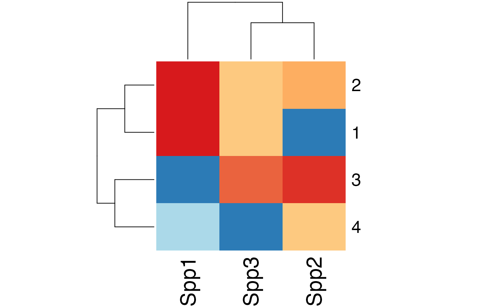

Quantifying Uncertainty for Fitted Objects
uncertainty.RdQuantifying uncertainty for fitted objects.
Usage
uncertainty(object, ...)
# S3 method for opticut
uncertainty(object,
which = NULL, type = c("asymp", "boot", "multi"),
B = 99, cl = NULL, ...)
# S3 method for multicut
uncertainty(object,
which = NULL, type = c("asymp", "boot"),
B = 99, cl = NULL, ...)
check_strata(x, mat)
# S3 method for uncertainty
strata(object, ...)
# S3 method for uncertainty
subset(x, subset=NULL, ...)
# S3 method for uncertainty
bestpart(object, ...)
# S3 method for uncertainty1
bestpart(object, ...)
# S3 method for uncertainty1
print(x, ...)
# S3 method for uncertainty
print(x, ...)
# S3 method for summary.uncertainty
print(x, sort, digits, ...)
# S3 method for uncertainty
summary(object, level = 0.95, ...)
# S3 method for uncertainty
as.data.frame(x,
row.names = NULL, optional = FALSE, sort, ...)
# S3 method for summary.uncertainty
as.data.frame(x,
row.names = NULL, optional = FALSE, sort, ...)
# S3 method for uncertainty1
bsmooth(object, ...)
# S3 method for uncertainty
bsmooth(object, ...)Arguments
- object
fitted model object (which should not contain extra arguments as part of
...), or an output fromuncertaintyfor thesummarymethod.- which
numeric or character (can be a vector) defining a subset of species from the fitted object, or or
NULL(all species, default).- type
character, describing the type of uncertainty calculation. See Details.
- B
numeric, number of iterations. For
type = "boot"andtype = "multi"it can be a user-supplied matrix with indices for resampling with dimensions length of observations times B.- cl
a cluster object, or an integer for multiple cores in parallel computations (integer value for forking is ignored on Windows).
- x
an object to be printed.
- level
the confidence level required.
- sort
logical value indicating if species should be meaningfully sorted, the default is
TRUE.- digits
numeric, number of significant digits in output.
- mat
a matrix with resampling indices (rows as samples, columns as iterations).
- row.names
NULLor a character vector giving the row names for the data frame. Missing values are not allowed. Seeas.data.frame.- optional
logical. If
TRUE, setting row names and converting column names (to syntactic names: seemake.names) is optional. Seeas.data.frame.- subset
logical, numeric, or character index indicating species to keep, missing values are not accepted.
- ...
other arguments passed to the underlying functions.
Details
Uncertainty is calculated for
indicator potential I, and expected values
(mu0, and mu1 for opticut, and mu_* for multicut objects).
"asymp": asymptotic distribution is based on best supported model
(this option is unavailable for custom distribution functions because
it requires the Hessian matrix).
This type is available for both opticut and multicut objects.
"boot": non-parametric bootstrap distribution
based on best partition found for the input object.
This type is available for both opticut and multicut objects.
"multi": non-parametric bootstrap distribution
based on best partition found for the bootstrap data (i.e.
the model ranking is re-evaluated each time).
"multi" works only if comb = "rank" in the
opticut call.
This type is not available for multicut objects.
Value
uncertainty returns an object of class 'uncertainty'.
The uncertainty element of the object is a list with species specific
output as elements (object class 'uncertainty1').
Each 'uncertainty1' output is a data frame with columns:
best partition, indicator potential I,
and expected values
(mu0, and mu1 for opticut, and mu_* for multicut objects).
check_strata returns a logical vector checking if
all original strata from the input object are represented
by resampling indices. Number of strata are attached as attributes
for further diagnostics.
The summary method prints the name of the best supported split,
selection frequency (R, reliability), indicator values (I, based on
the distribution of values within the best supported split with highest
reliability) and confidence interval for I (based on level).
The subset method subsets the species in the uncertainty object.
bestpart finds the selection frequencies for
strata as best partitions (number of strata x number of species).
The coercion method as.data.frame returns a data frame.
The bsmooth method returns bootstrap smoothed results
for each strata (not available for multicut based uncertainty objects,
check uncertainty results instead).
Warning
Resampling methods can lead to complete exclusion of certain strata
when sample size is small. Try revising the stratification of the
input object, or provide custom resampling indices via the B
argument using stratified (block) bootstrap, jackknife (leave-one-out),
or similar techniques. Finding a suitable random seed
via set.seed or dropping unsuitable iterations
can also resolve the issue.
Examples
set.seed(2345)
n <- 50
x0 <- sample(1:4, n, TRUE)
x1 <- ifelse(x0 %in% 1:2, 1, 0)
x2 <- rnorm(n, 0.5, 1)
x3 <- ifelse(x0 %in% 2:4, 1, 0)
lam1 <- exp(0.5 + 1*x1 + -0.2*x2)
Y1 <- rpois(n, lam1)
lam2 <- exp(1 + 0.5*x3)
Y2 <- rpois(n, lam2)
Y3 <- rpois(n, exp(0))
Y <- cbind(Spp1=Y1, Spp2=Y2, Spp3=Y3)
oc <- opticut(Y ~ x2, strata=x0, dist="poisson", comb="rank")
## asymptotic confidence intervals
(uc1 <- uncertainty(oc, type="asymp", B=999))
#> Multivariate multicut uncertainty results, type = asymp, B = 999
#>
summary(uc1)
#> Multivariate multicut uncertainty results
#> type = asymp, B = 999, level = 0.95
#>
#> split R I Lower Upper
#> Spp1 1+2 1 0.3756 0.205644 0.5150
#> Spp3 1+2+3 1 0.3438 0.016874 0.6984
#> Spp2 2+3+4 1 0.1354 0.007452 0.2944
## bootstrap-based confidence intervals
(uc2 <- uncertainty(oc, type="boot", B=19))
#> Multivariate multicut uncertainty results, type = boot, B = 19
#>
summary(uc2)
#> Multivariate multicut uncertainty results
#> type = boot, B = 19, level = 0.95
#>
#> split R I Lower Upper
#> Spp1 1+2 1 0.3688 0.266965 0.4710
#> Spp3 1+2+3 1 0.3689 0.023399 0.8796
#> Spp2 2+3+4 1 0.1354 0.003183 0.2706
## use user-supplied indices
## multi-model bootstrap based uncertainties
B <- replicate(25, sample.int(n, replace=TRUE))
check_strata(oc, B) # check representation
#> [1] TRUE TRUE TRUE TRUE TRUE TRUE TRUE TRUE TRUE TRUE TRUE TRUE TRUE TRUE TRUE
#> [16] TRUE TRUE TRUE TRUE TRUE TRUE TRUE TRUE TRUE TRUE
#> attr(,"nx")
#> [1] 4
#> attr(,"nmat")
#> [1] 4 4 4 4 4 4 4 4 4 4 4 4 4 4 4 4 4 4 4 4 4 4 4 4 4
(uc3 <- uncertainty(oc, type="multi", B=B))
#> Multivariate multicut uncertainty results, type = multi, B = 25
#>
summary(uc3)
#> Multivariate multicut uncertainty results
#> type = multi, B = 25, level = 0.95
#>
#> split R I Lower Upper
#> Spp1 1+2 0.7308 0.3980 0.27604 0.552
#> Spp3 1+2+3 0.3846 0.5624 0.21287 1.000
#> Spp2 2+3+4 0.4615 0.1760 0.09648 0.266
## best partitions:
## selection frequencies for strata and species
bestpart(uc3)
#> Spp1 Spp2 Spp3
#> 1 1.0000000 0.03846154 0.6538462
#> 2 1.0000000 0.73076923 0.6538462
#> 3 0.0000000 0.92307692 0.8461538
#> 4 0.2692308 0.65384615 0.0000000
heatmap(bestpart(uc3), scale="none", col=occolors()(25))
## bootstrap smoothed predictions per strata
bsmooth(uc3)
#> Spp1 Spp2 Spp3
#> 1 4.242728 3.413736 0.6399826
#> 2 4.242728 4.330780 0.6884190
#> 3 1.808303 4.583842 0.7642625
#> 4 2.429689 4.188160 0.3545554
heatmap(bestpart(uc3), scale="none", col=occolors()(25))

## individual species results
uc3$uncertainty
#> $Spp1
#> Univariate multicut uncertainty results, type = multi, B = 25
#>
#> best I mu0 mu1
#> Length:26 Min. :0.2675 Min. :1.159 Min. :3.436
#> Class :character 1st Qu.:0.3360 1st Qu.:1.502 1st Qu.:3.974
#> Mode :character Median :0.4088 Median :1.777 Median :4.184
#> Mean :0.4065 Mean :1.808 Mean :4.243
#> 3rd Qu.:0.4719 3rd Qu.:2.108 3rd Qu.:4.405
#> Max. :0.5892 Max. :2.764 Max. :5.502
#>
#> $Spp2
#> Univariate multicut uncertainty results, type = multi, B = 25
#>
#> best I mu0 mu1
#> Length:26 Min. :0.0258 Min. :2.312 Min. :3.844
#> Class :character 1st Qu.:0.1105 1st Qu.:3.097 1st Qu.:4.400
#> Mode :character Median :0.1344 Median :3.359 Median :4.659
#> Mean :0.1559 Mean :3.394 Mean :4.627
#> 3rd Qu.:0.2209 3rd Qu.:3.724 3rd Qu.:4.944
#> Max. :0.2813 Max. :4.225 Max. :5.321
#>
#> $Spp3
#> Univariate multicut uncertainty results, type = multi, B = 25
#>
#> best I mu0 mu1
#> Length:26 Min. :0.1554 Min. :0.0000 Min. :0.6147
#> Class :character 1st Qu.:0.2951 1st Qu.:0.2790 1st Qu.:0.6926
#> Mode :character Median :0.3702 Median :0.3674 Median :0.7865
#> Mean :0.4280 Mean :0.3546 Mean :0.8334
#> 3rd Qu.:0.4884 3rd Qu.:0.4624 3rd Qu.:0.9216
#> Max. :1.0000 Max. :0.6937 Max. :1.7098
#>
bestpart(uc3$uncertainty[[1]])
#> [,1] [,2] [,3] [,4] [,5] [,6] [,7] [,8] [,9] [,10] [,11] [,12] [,13] [,14]
#> 1 1 1 1 1 1 1 1 1 1 1 1 1 1 1
#> 2 1 1 1 1 1 1 1 1 1 1 1 1 1 1
#> 3 0 0 0 0 0 0 0 0 0 0 0 0 0 0
#> 4 0 0 0 0 0 0 0 0 0 0 1 0 0 1
#> [,15] [,16] [,17] [,18] [,19] [,20] [,21] [,22] [,23] [,24] [,25] [,26]
#> 1 1 1 1 1 1 1 1 1 1 1 1 1
#> 2 1 1 1 1 1 1 1 1 1 1 1 1
#> 3 0 0 0 0 0 0 0 0 0 0 0 0
#> 4 0 1 0 1 0 1 1 0 0 0 1 0
bsmooth(uc3$uncertainty[[1]])
#> [,1] [,2] [,3] [,4] [,5] [,6] [,7] [,8]
#> 1 4.353309 4.123784 4.796411 5.502443 4.966979 3.956581 4.263636 4.066393
#> 2 4.353309 4.123784 4.796411 5.502443 4.966979 3.956581 4.263636 4.066393
#> 3 1.968847 1.752355 2.048311 1.802075 2.764274 1.307073 2.327590 2.026677
#> 4 1.968847 1.752355 2.048311 1.802075 2.764274 1.307073 2.327590 2.026677
#> [,9] [,10] [,11] [,12] [,13] [,14] [,15] [,16]
#> 1 4.547626 4.154616 3.436177 4.320181 4.421835 3.510415 4.258540 3.983873
#> 2 4.547626 4.154616 3.436177 4.320181 4.421835 3.510415 4.258540 3.983873
#> 3 2.368197 1.727303 1.399548 2.128446 1.869369 1.312151 1.990268 1.277240
#> 4 2.368197 1.727303 3.436177 2.128446 1.869369 3.510415 1.990268 3.983873
#> [,17] [,18] [,19] [,20] [,21] [,22] [,23] [,24]
#> 1 3.906009 3.714836 3.921941 4.242182 4.214182 4.605661 3.970598 4.998947
#> 2 3.906009 3.714836 3.921941 4.242182 4.214182 4.605661 3.970598 4.998947
#> 3 2.251073 2.147011 1.628562 2.208800 1.491471 1.532036 1.559550 1.292377
#> 4 2.251073 3.714836 1.628562 4.242182 4.214182 1.532036 1.559550 1.292377
#> [,25] [,26]
#> 1 4.049467 4.024312
#> 2 4.049467 4.024312
#> 3 1.158853 1.676410
#> 4 4.049467 1.676410
if (FALSE) {
## block bootstrap
block_fun <- function()
unlist(lapply(unique(x0), function(z) if (sum(x0==z) < 2)
which(x0==z) else sample(which(x0==z), sum(x0==z), replace=TRUE)))
B <- replicate(25, block_fun())
check_strata(oc, B) # check representation
summary(uncertainty(oc, type="multi", B=B))
## jackknife
B <- sapply(1:n, function(i) which((1:n) != i))
check_strata(oc, B) # check representation
summary(uncertainty(oc, type="multi", B=B))
## multicut based uncertainty
mc <- multicut(Y ~ x2, strata=x0, dist="poisson")
## asymptotic confidence intervals
(muc1 <- uncertainty(mc, type="asymp", B=999))
summary(muc1)
bestpart(muc1)
## bootstrap-based confidence intervals
(muc2 <- uncertainty(mc, type="boot", B=19))
summary(muc2)
bestpart(muc2)
## dolina example
data(dolina)
## stratum as ordinal
dolina$samp$stratum <- as.integer(dolina$samp$stratum)
## filter species to speed up things a bit
Y <- ifelse(dolina$xtab[,colSums(dolina$xtab > 0) >= 20] > 0, 1, 0)
## opticut results, note the cloglog link function
dol <- opticut(Y ~ stratum + lmoist + method, data=dolina$samp,
strata=dolina$samp$mhab, dist="binomial:cloglog")
## parallel computing for uncertainty
library(parallel)
cl <- makeCluster(2)
ucdol <- uncertainty(dol, type="multi", B=25, cl=cl)
stopCluster(cl)
bestpart(ucdol)
heatmap(t(bestpart(ucdol)), scale="none", col=occolors()(25),
distfun=function(x) dist(x, "manhattan"))
## See how indicator value changes with different partitions
## (and why it is the wrong metric to use in this calse)
with(ucdol$uncertainty[["pvic"]],
boxplot(I ~ best, col="gold", ylab="Indicator value"))
## What we should calculate is the bootstrap smoothed mean of the
## expected value and its confidence intervals
bs <- bsmooth(ucdol$uncertainty[["pvic"]])
boxplot(t(bs), ylab="Expected value")
cbind(Mean=rowMeans(bs), t(apply(bs, 1, quantile, probs=c(0.025, 0.975))))
## A more interesting simulated example for bootstrap smoothing
## and comparing opticut vs. multicut
set.seed(1)
n <- 2000
x <- sort(runif(n, -8, 8))
p <- plogis(0.5 + -0.1 * x + -0.2 * x^2)
y <- rbinom(n, 1, p)
d <- diff(range(x))/10
br <- seq(min(x), max(x), by=d)
g <- cut(x, br, include.lowest=TRUE)
levels(g) <- LETTERS[1:nlevels(g)]
o <- opticut(y ~ 1, strata=g, dist="binomial")
m <- multicut(y ~ 1, strata=g, dist="binomial")
library(parallel)
cl <- makeCluster(2)
uo <- uncertainty(o, type="multi", B=99, cl=cl)
um <- uncertainty(m, type="boot", B=99, cl=cl)
stopCluster(cl)
## bootstrap average for opticut
bs <- bsmooth(uo$uncertainty[[1]])
stat <- cbind(Mean=rowMeans(bs),
t(apply(bs, 1, quantile, probs=c(0.025, 0.975))))
## bootstrap average for multicut
bsm <- as.matrix(um$uncertainty[[1]][,-(1:2)])
statm <- cbind(Mean=colMeans(bsm),
t(apply(bsm, 2, quantile, probs=c(0.025, 0.975))))
op <- par(mfrow=c(2,1))
plot(p ~ x, type="l", ylim=c(0,1), main="Binary partitions (opticut)")
abline(v=br, col="grey", lty=3)
lines(br[-1]-0.5*d, stat[,1], col=4)
lines(br[-1]-0.5*d, stat[,2], col=4, lty=2)
lines(br[-1]-0.5*d, stat[,3], col=4, lty=2)
lines(br[-1]-0.5*d, bs[,1], col=2)
legend("topright", bty="n", lty=c(1,1,2,1), col=c(1,4,4,2),
legend=c("True response","bsmooth","0.95 CI","Best partition"))
plot(p ~ x, type="l", ylim=c(0,1), main="Multi-level model (multicut)")
abline(v=br, col="grey", lty=3)
lines(br[-1]-0.5*d, statm[,1], col=4)
lines(br[-1]-0.5*d, statm[,2], col=4, lty=2)
lines(br[-1]-0.5*d, statm[,3], col=4, lty=2)
legend("topright", bty="n", lty=c(1,1,2), col=c(1,4,4),
legend=c("True response","bsmooth","0.95 CI"))
par(op)
}